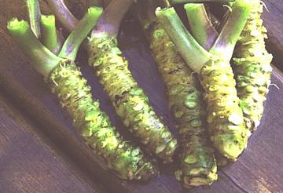

Wasabi

[Japanese Horseradish; Wasabia japonica]
This very pungent green fleshed root is used grated as a condiment,
particularly to accompany sushi. Most sushi lovers, however, have never
tasted wasabi. Pretty much all sushi bars in the US and nearly all in
Japan serve a fake wasabi made from
Horseradish, mustard seeds and green food
coloring. Real wasabi (hon-wasabi) has a more refined hotness, a sweet
after-taste and is not nearly so bright a green as the fake. It's also
very expensive and the flavor is extremely perishable.
Imported "wasabi" purchased as tiny cans of dried powder or tubes of
paste is all faked up from horseradish. The Japanese can export
horseradish under the name "wasabi" because the Japanese name for
horseradish is "seiyo wasabi" (Western wasabi). They can even call it "
real wasabi".
Several companies set up wasabi production in North America. At first
they expected to export it to Japan, but local demand has been so great
there's little left to export. Two grades are grown in North America:
sawa-wasabi (semi aquatic - for culinary use) and oka-wasabi (field
grown - for the nutritional supplement industry). Fresh product is
available from these growers (see below for suppliers).
Photo "borrowed" from Pacific Coast Wasabi.
More on Cabbage Roots.
Fresh Wasabi Rhizomes:
These are a phone or Internet
purchase direct from the grower - expect to pay for 2nd day air or better
and US $100 to $150/pound. Pacific Farms has stopped selling rhizomes
but they are still available from Real Wasabi and Pacific Coast Wasabi.
Wrapped in damp paper toweling inside a bag these can be kept
refrigerated for up to 30 days, otherwise, freeze.
To prepare, grate on a very fine grater. Traditionally this is a piece
of shark skin but a very fine ceramic or stainless grater will work.
Quickly gather the grated paste into a ball and cover tightly with
plastic wrap. Let sit that way for about 8 minutes to develop flavor, then
serve immediately. After 20 minutes the flavor will start to rapidly
decline. It can be restored to some extent by remixing and rewrapping.
Some say a pinch of sugar will help.
Wasabi Paste:
(This product was formerly supplied by
Pacific Farms) Paste looses its strength rapidly at room temperature so
it must be shipped frozen - again 2nd day air or better. It must be kept
frozen until needed, then refrigerated. There have been complaints that
this wasabi is difficult to squeeze out of the tube, but you can always
cut off the bottom of the tube and squeeze it out that way. So-called
"Wasabi paste" imported from Japan is a chemical stew based on
horseradish - but it squeezes easily.
Dried Wasabi:
This form is problematic because normal
drying pretty much destroys the flavor. Freeze drying works much better,
but the product is still very perishable. It will last a year
refrigerated in a tightly sealed container away from light. Real Wasabi
seems to be the main supplier of this form. That imported from Japan is
all fake, made of horseradish, mustard and dye. Preparation is easy -
just mix equal volume of powder and water into a paste and let sit 10
minutes to develop flavor. Again, it should not be prepared until just
before use.
Suppliers:
- Pacific Farms sold their Wasabe operation to Beaverton Foods,
maker of Beaver and Inglehoffer condiments.
- Oregon Coast Wasabe
- Sells fresh roots, plant starts, prdoducts.
- Pacific Coast Wasabi,
Vancouver Canada - Website down, Ded 2018.
- Real Wasabi, Bluffton,
South Carolina - dried powder, fresh rhizomes, dressings and misc.
products.
cb_wasabz 090311 - www.clovegarden.com
©Andrew Grygus - agryg@clovegarden.com - Photos on this
page not otherwise credited are © cg1 -
Linking to and non-commercial use of this page permitted